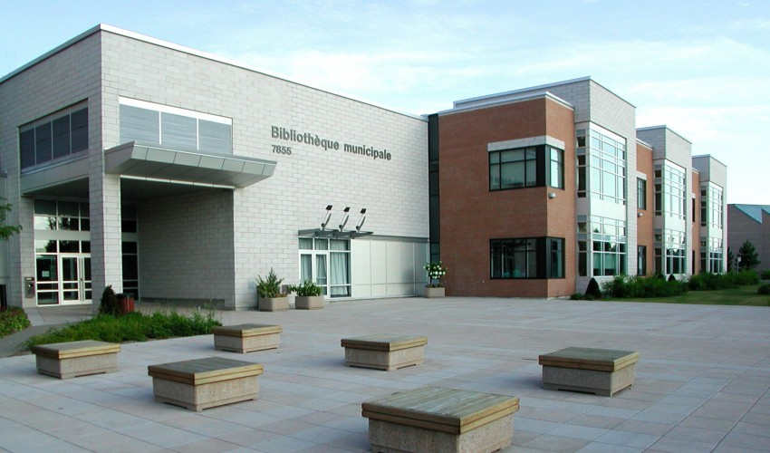

Histoire de la ville
1958
La ville de Brossard est jeune. Elle a été fondée en 1958 par Georges-Henri Brossard, premier maire de la ville, et maire de l’ex-paroisse de La Prairie pendant 14 ans. En effet, la famille Brossard fut l’une des plus vieilles familles terriennes du comté de La Prairie.
1962
Le premier hôtel de ville fut inauguré en 1962. C’est M. Nicolas Matte fournit le financement et le terrain nécessaire à sa construction. À son hommage, son nom fut donné au boulevard où fut établie l’hôtel de ville.
1967
En juin 1967, George-Henri Brossard se retire de la vie politique. Il fut remplacé par M. Léon Gravel. Aux mêmes élections, Mme Lucienne Filion devint représentante d’un quartier. Il s’agit de la deuxième femme au Québec ayant décroché un poste dans un conseil municipal.
1976
En 1976 fut construite la première Bibliothèque municipale de Brossard. Elle obtint un tel succès que quatre ans après, en 1980, elle fut agrandie, pour atteindre une superficie de 1215m2
 Bibliothèque municipale de Brossard
Bibliothèque municipale de Brossard
1988
En 1988, la population brossardoise était de 57441 habitants. Parmi ceux-ci, 41 groupes ethniques se partageant 34% de la population. Ainsi, pour la première fois, le conseil municipal de la ville déclare Brossard comme étant une ville multiculturelle.
1990
En 1990, la construction de l’actuel hôtel de ville fut entamée.
 Hôtel de ville de Brossard
Hôtel de ville de Brossard
2001
En 2001, la deuxième Bibliothèque municipale de Brossard fut construite. Celle-ci possède une superficie de 4704 m2 (soit presque 4 fois plus grande que la première) et fut partiellement financée par la Bill & Melinda Gates Foundation.
 Bibliothèque municipale de Brossard2002
En 2002, la ville de Brossard est fusionnée avec les villes de Boucherville, Greenfield Park, Le Moyne, Longueuil, Saint-Bruno-de-Montarville, Saint-Hubert et Saint-Lambert pour former l’arrondissement de Brossard au sein de la nouvelle agglomération nommée Longueuil.Cependant, cette fusion est source de multiples problèmes et tensions. En effet, en 2006, un mouvement massif de défusion eut lieu, et Brossard regagna son statut de ville à la suite d’un référendum remporté à 81%.
2008
Brossard fêta son 50eme anniversaire en 2008.
2017
En 2017 fut élue l’actuelle mairesse de Brossard, Mme Doreen Assaad
Doreen Assaad